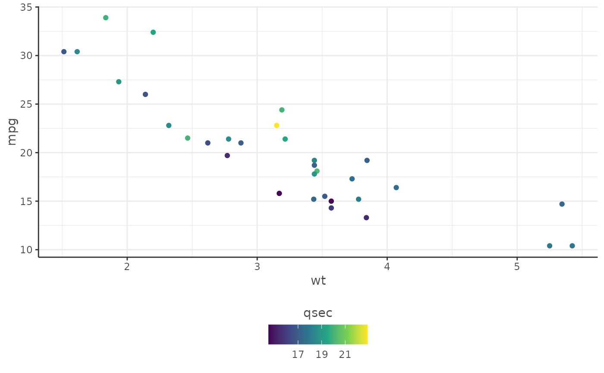

Apply Capture Intelligence themed colour scales and aesthetics to ggplot2 plots
Source:R/themes.R
dr_theme_capture.RdThis function provides a convenient way to apply Capture themed colour scales and aesthetics to ggplot2 plots.
The user can specify whether they want a continuous or discrete theme by providing the scale_type argument.
Arguments
- scale_type
A character string specifying the type of scale, either "continuous" or "discrete". Default is "discrete". Simply, is the data mapped to the colour or fill aesthetic discrete or continuous.
- direction
A character string, either "forwards" or "backwards" specifying the direction of the colour or fill gradient for continuous scales. Default is "forwards". Exercise caution when opting for "backwards" as it reverses the colour sequence, causing smaller data values in the plot to appear lighter. This may not be visually intuitive for the audience, as typically brighter colours, such as yellows, are conventionally associated with higher data values.
- guide
An optional character string specifying the type of guide to use for continuous scales. Default is "colourbar", but other values include "legend", and "none". A rule of thumb is if the data are continuous, "colourbar" should be used, and if the data are discrete then "legend" should be used.
- fallback_font
Adds a fallback font of 'sans' in case user does not have required font.
Examples
library(ggplot2)
# Example with continuous theme
ggplot(mtcars, aes(x = wt, y = mpg, colour = qsec)) +
geom_point() +
dr_theme_capture(scale_type = "continuous")

# Example with discrete theme
ggplot(iris, aes(x = Sepal.Length, y = Sepal.Width, colour = Species)) +
geom_point() +
dr_theme_capture(scale_type = "discrete")